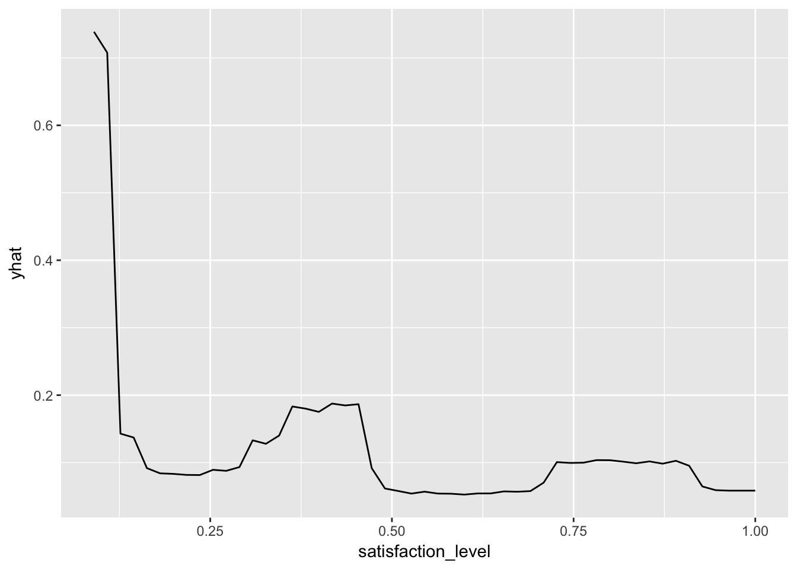
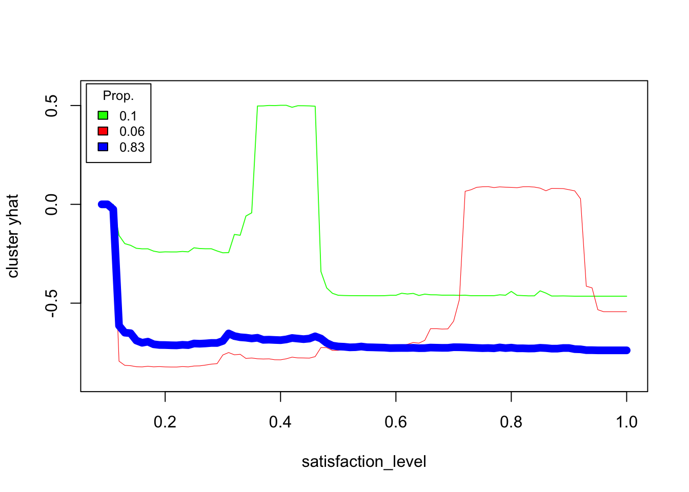

Chapter 3 Conditional structure
3.1 Partial Dependence Plots
Partial Dependence Plots (see pdp package (Greenwell 2017)) for a black box \(f(x; \theta)\) calculates the expected output given a selected variable.
\[ p_i(x_i) = E_{x_{-i}}[ f(x^i, x^{-i}; \theta) ] \]
Of course this expectation cannot be calculated directly as we do not know fully the \(f()\) neither the distribution of \(x_{-i}\). This value is estimated by
\[ \hat p_i(x_i) = \frac{1}{n} \sum_{j=1}^{n} f(x^i_j, x_j^{-i}, \hat \theta) \]
Let’s see an example for the model HR_rf_model. Below we are using pdp::partial function to calculate pdp curve for variable satisfaction_level. Then the curve is plotted with plotPartial (based on lattice) or autoplot (based on ggplot2).
library("pdp")
library("randomForest")
library("breakDown")
HR_rf_model <- randomForest(left~., data = breakDown::HR_data, ntree = 100)
part <- partial(HR_rf_model, "satisfaction_level")
plotPartial(part)
library("ggplot2")
autoplot(part)
3.2 Individual Conditional Expectation Plot
Individual Conditional Expectations (ICE) may be considered as an extension of the PDP curves (see ICEbox package (Goldstein et al. 2015)). Instead of plotting expected value over all observations, for ICE we are plotting individual conditional model responses. Average of ICE curves results in PDP curve.
An ICE curve for observation \(k\) over variable \(i\) may be defined as
\[ ice_k(x_i) = f(x^i, x_k^{-i}; \theta) \]
ICE curves can be plotted with pdp package. Note that curves may be cantered in a given point, this helps in identification of possible interactions.
library("pdp")
library("randomForest")
library("breakDown")
library("ggplot2")
HR_rf_model <- randomForest(left~., data = breakDown::HR_data, ntree = 100)
part_rf_satisfaction <- partial(HR_rf_model, "satisfaction_level")
part_rf_satisfaction <- partial(HR_rf_model, pred.var = "satisfaction_level", ice = TRUE)
plotPartial(part_rf_satisfaction, rug = TRUE, train = HR_data, alpha = 0.2)
autoplot(part_rf_satisfaction, center = TRUE, alpha = 0.2, rug = TRUE, train = HR_data)
Or with the ICEbox package.
library("ICEbox")
part_rf_satisfaction = ice(object = HR_rf_model, X = HR_data, y = HR_data$satisfaction_level, predictor = "satisfaction_level", frac_to_build = .1)## ............................................................................................plot(part_rf_satisfaction)
As ICE curves are useful tool for identification of interactions, these individual curves may be clustered with the clusterICE function.
clusterICE(part_rf_satisfaction, nClusters = 3, plot_legend = TRUE, center = TRUE)
3.3 Factor Merger
factorMerger package (Sitko and Biecek 2017)
3.4 ALEPlot
ALEPlot package (Apley 2017)
References
Greenwell, Brandon M. 2017. “Pdp: An R Package for Constructing Partial Dependence Plots.” The R Journal 9 (1): 421–36. https://journal.r-project.org/archive/2017/RJ-2017-016/index.html.
Goldstein, Alex, Adam Kapelner, Justin Bleich, and Emil Pitkin. 2015. “Peeking Inside the Black Box: Visualizing Statistical Learning with Plots of Individual Conditional Expectation.” Journal of Computational and Graphical Statistics 24 (1): 44–65. doi:10.1080/10618600.2014.907095.
Sitko, Agnieszka, and Przemyslaw Biecek. 2017. FactorMerger: Hierarchical Algorithm for Post-Hoc Testing. https://github.com/MI2DataLab/factorMerger.
Apley, Dan. 2017. ALEPlot: Accumulated Local Effects (Ale) Plots and Partial Dependence (Pd) Plots. https://CRAN.R-project.org/package=ALEPlot.